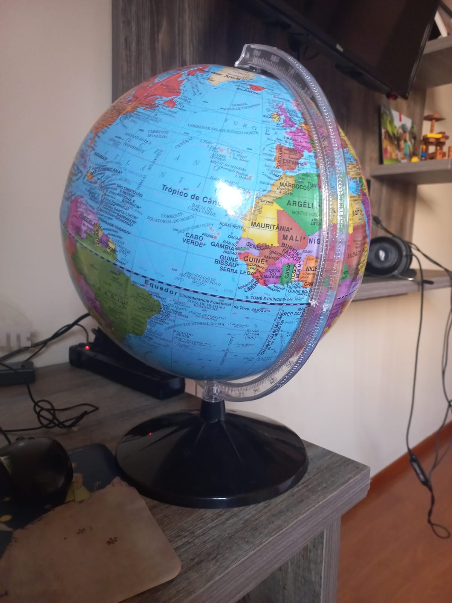

ESTUDO DE CASO ENTRE GOOGLE LENS E MOBILENET
GOOGLE LENS
x
Mobilenet
Imagem Teste:

Resultado no GOOGLE LENS - Globo Terrestre
Resultado no Modelo MobileNet - Quebra-Cabeça
Resultado: GOOGLE LENS foi mais preciso
Imagem Teste:
Resultado no GOOGLE LENS - Luminária
Resultado no Modelo MobileNet - Bolsa
Resultado: MOBILENET foi mais preciso
Imagem Teste:
Resultado no GOOGLE LENS - Naruto Masashi Kishimoto gold 2
Resultado no Modelo MobileNet - Microfone
Resultado: GOOGLE LENS foi mais preciso
Testei 3 imagens.
GOOGLE LENS previou 2 delas corretamente,e o MOBILENET foi menos preciso.
Então, de acordo com meu estudo de caso, o GOOGLE LENS é mais preciso.
Desenvolvido por:Samuel G. Pithan